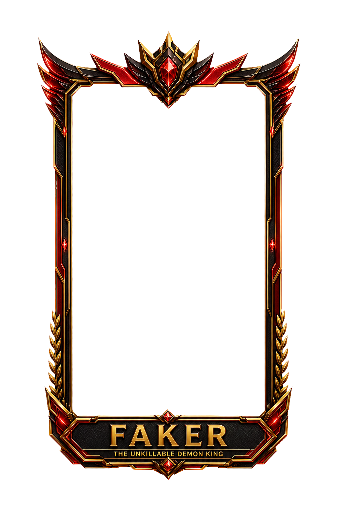

SERVER SUPREME · CARD ID CN-0B48C6FF8F9B4AC5
FAKER CHAMPIONSHIP EDITION
SKT T1 프로팀의 레드·블랙·골드 챔피언십 감성을 재해석한 FAKER 단독 프레임
★10
FUR
SOOP

COLLECTION / DETAIL
대형 프리뷰
FUR
SOOP
DEX / DECK / RESULT
축소 가독성 확인